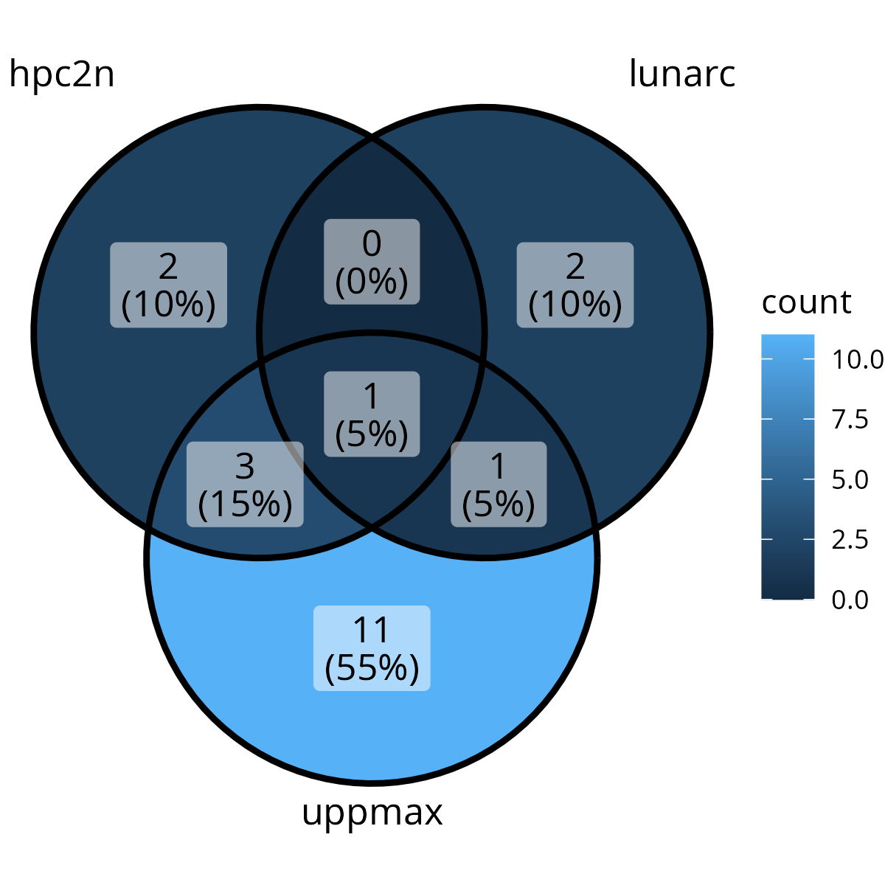
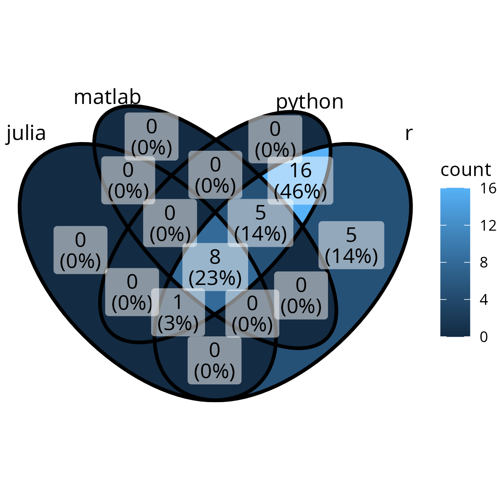
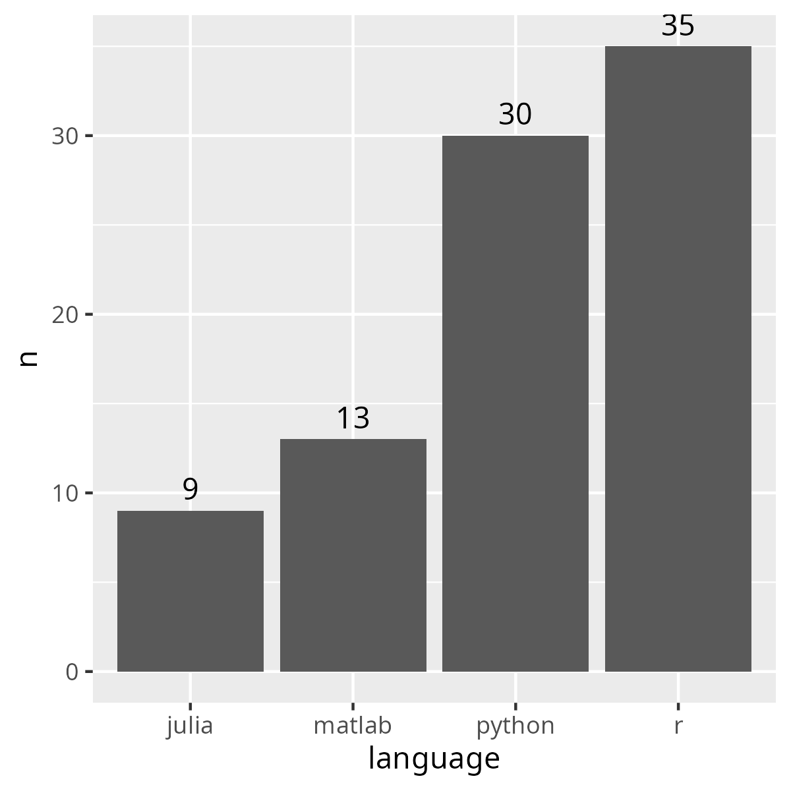
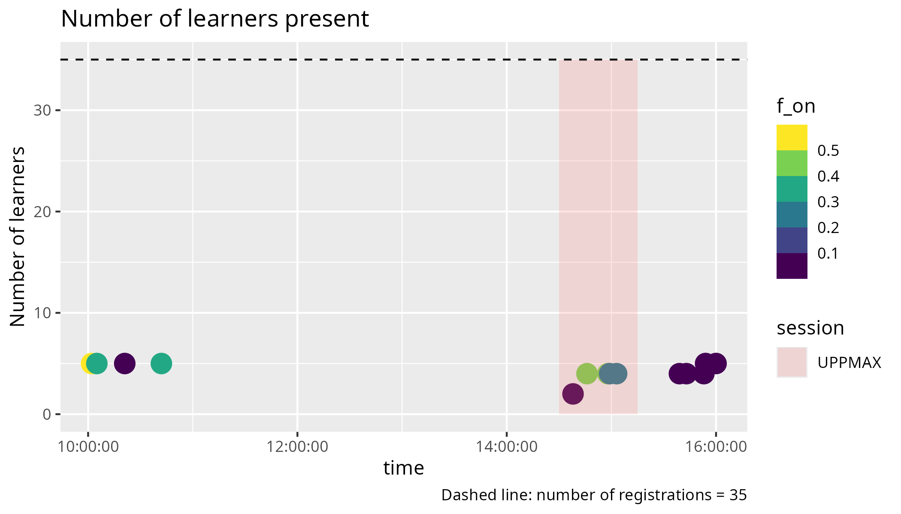
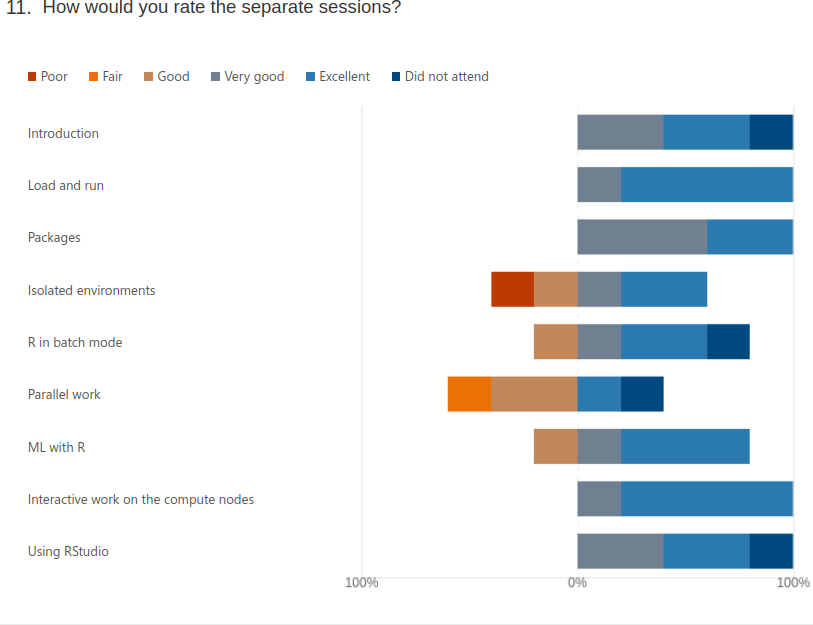
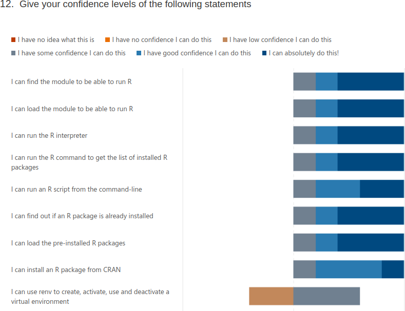
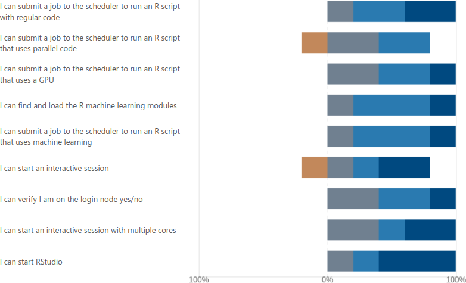

Reflection¶
- Teaching day: 2024-10-24
- Topic: R
- Written on 2024-10-24
Schedule¶
This is the schedule of that day:
| Time | Topic | Teacher(s) |
|---|---|---|
| 9:00 | (optional) First login | BB + PO + RB |
| 9:45 | Break | . |
| 10:00 | Introduction | RB |
| 10:10 | Syllabus | RB |
| 10:20 | Load modules and run | RB |
| 10:45 | Break | . |
| 11:00 | Packages | BB |
| 11:30 | Isolated environments | BB |
| 12:00 | Lunch | . |
| 13:00 | Batch | BB |
| 13:30 | Parallel | PO |
| 14:15 | Break | . |
| 14:30 | Simultaneous session | PO * RB * RP |
| 15:15 | Break | . |
| 15:30 | Machine learning | BB or PO |
| 16:00 | Summary and evaluation | RB |
| 16:15 | Done | . |
Login session¶
4 learners showed up for this optional session:
- 3x could already login
- 1x a LUNARC user that needed help, I put him in a Zoom room with the LUNARC teacher
Session: 10:00-10:45: intro and syllabus and load and run R¶
There were 5 learners. I did the regular teaching cycles, with a Prior at the start. There were 3 that -per my request- turned on their camera, with 2 left after the announcement that the session will be recorded. At 10:21 I started the exercise and at 10:40 I discussed it. At 10:40, upon asking for a yes/no reaction, 5 out of 5 learners signalled they had been able to do the exercise. I rounded of the session by going over the key points again.
As already was in the lesson plan, I don’t like this session. I do think many people think this stock-standard way of teaching is fine, but I’d enjoy better to have the learners learn from each center’s documentation, as this will be more helpful. Instead, now, the session is more a copy-paste exercise, except for the Prior and Repeat. I can imagine learners like it (we know learners like passive teaching), but they could actually have learned more.
- [ ] In the next course iteration: use more active learning methods in this session
Session 14:30-15:15: interactive and RStudio¶
It was delayed 15 minutes, which was no problem. Prior took 15 minutes, in which I recapped earlier sessions too. I gave the learners 15 minutes for the exercise. All 4 learners were able to complete the procedure.
During the 15 minutes, there was 1 learner that shared her screen with a question beyond the content of this session. 1 learner needed to install a local ThinLinc client and this did not work. That learner did see how it looked like and stated she is confident she could do it via the website.
As the learning objectives were achieved, I ended the session earlier (there were no more questions). I do think the session’s length is correct, in the case there would be some slower learners.
I told the 4 learners when the next session would start, which was 15 minutes later on the schedule, as I expected other sessions to do take the scheduled amount of time. However, it turned out that the next session would like to start earlier. I took the blame and hoped for the best. What I did not know is that it would be only the UPPMAX learners left, so we could have easily started 15 minutes earlier.
Session 16:00-16:15: summary and evaluation¶
I’ve not shown the summary, although it follows the evaluation questions, as I feel it increases the evaluation results, as the confidences will be higher, due to the refresher. The full procedure took 3 minutes. It took 5 minutes for the 5 learners to fill in the evaluation forms. All learners said bye, except for 1. That 1 learner had a question, which was answered.
I discussed this story with a colleague afterwards. He will try out a combination of showing summary yes/no, answers in summary yes/no and report to me.
Analysis¶

Centers of R learners

Languages of R learners

Number of learners per language

Learners in time
Evaluation results¶
5 responses
Useless info to me.
2. Today's content and feedback to the lecturers (e.g. materials, exercises, structure): – What did you like best?
- "I liked being able to run through the examples myself. "
- "Pedro's sessions"
Useless to me, nice for Pedro!
3. Today's content and feedback to the lecturers (e.g. materials, exercises, structure): – Where should we improve?
- "I think sometimes there could have been slightly less kinds of examples, and one main example per module with extra focus and more time to complete. "
I think I focussed well on one example and did have enough time for exercises.
4. Training event organisation (e.g. announcement, registration, ...): – What did you like best? – Where should we improve?
- "I liked the general organization, felt like any questions one might have where answered in the introductory email."
Nice for Birgitte!
Useless to me: which sessions?
Useless to me: which sessions?
Useless to me: which sessions?
8. Teaching aids used (e.g. slides) were well prepared
Agree completely 2
Agree 3
No strong feelings 0
Disagree 0
Disagree completely 0
Useless to me: which sessions?
Useless to me: which sessions?
10. Hands-on exercises and demonstrations were well prepared
Agree completely 2
Agree 3
No strong feelings 0
Disagree 0
Disagree completely 0
Useless to me: which sessions?

Only my sessions:
- Introduction: 2x very good, 2x excellent
- Load and run: 4x excellent
- Interactive work on the compute node: 1x very good, 4x excellent
- Using RStudio: 2x very good, 2x excellent
So, although I dislike my ‘Load and run’ session, it has been appreciated by the learners.
 
My learning objectives:
- I can find the module to be able to run R: 1x some, 1x good, 3x absolutely
- I can load the module to be able to run R: 1 some, 1 good, 3 absolutely
- I can run the R interpreter: 1 some, 1 good, 3 absolutely
- I can run the R command to get the list of installed R packages: 1 some, 1 good, 3 absolutely
- I can run an R script from the command-line: 1 some, 2 good, 2 absolutely
- I can find out if an R package is already installed: 1 some, 1 good, 3 absolutely
- I can start an interactive session: 1 low, 1 some, 1 good, 2 absolutely
- I can verify I am on the login node yes/no: 2 some, 2 good, 1 absolutely
- I can start an interactive session with multiple cores: 2 some, 1 good, 2 absolutely
- I can start RStudio: 1 some, 1 good, 3 absolutely
It seems my simultaneous session was weakest: they did feel confident to start RStudio, but starting an interactive node and verify on which node(s) was indeed done a bit too informal in hindsight. It is weird that a learner has a low confidence in starting any interactive session, but some confidence when it is multiple cores…?
To do next time:
- [ ] In the simultaneous session, stay formal
Useless info.
14. Which future training topics would you like to be provided by the training host(s)?
- 2 responses
No idea what those are
No idea what those are